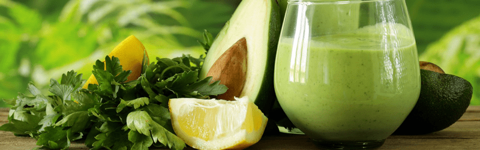
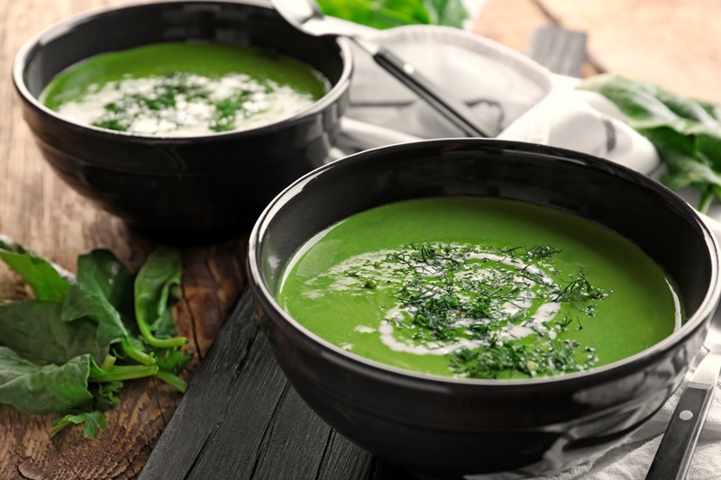
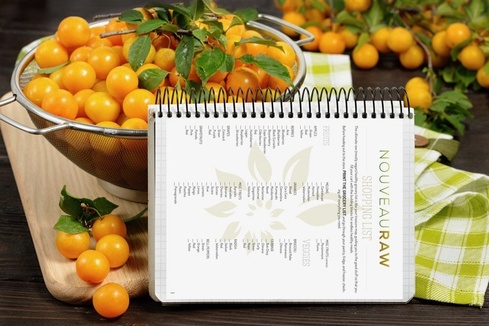
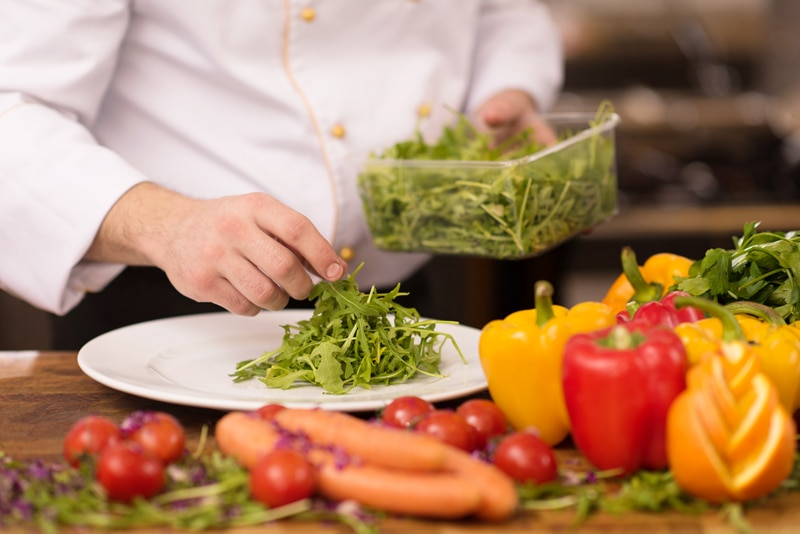

[otw_shortcode_html_editor]
Every time you eat it is an opportunity to truly nourish your body!
The term “raw food diet” refers to the consumption of foods that haven’t been cooked or treated at temperatures above 105-115 degrees (F). Above this temperature food and especially the enzymes in the food begin to degrade. Therefore adding a greater percentage of raw foods into your diet can have amazing health benefits.

Whether you are 100% committed to raw, curiously raw, or somewhere in between... I think we can all agree that consuming more fresh greens, vegetables, fruits, fats, sprouted nuts/grains, fermented foods, and proteins is an excellent way to reach or maintain your optimal health. (takes a deep breath)
Join NouveauRaw Now
Only 5.99 a month
Is this Right for Me?
You have to choose your own path, one that resonates with your own body. I am not here to advocate just ONE way of eating. Everyone has to find the right level of raw for them. Even with all the science and resources out there telling you what you should or shouldn't eat, the ultimate measure is how you feel. General nutrition guidelines don’t acknowledge you as an individual. With that said, I would like to recommend that anytime you plan on making dietary changes, that you find a good naturopathic or functional medicine doctor who will be able to do blood tests so you can monitor how your body is responding. Remember the food you eat can be either the safest most powerful form of medicine or the slowest form of poison.
When should I be concerned?
I bet you didn't expect me to jump right into this, did you? I am not here to sell or convince you to eat a certain way. I am here to help guide you, give you food for thought (pun intended), and ultimately to provide delicious and nutritious recipes. There are a lot of positives to eating raw plant-based foods, but there are times when you may need to incorporate cooked foods as well. And trust me... THERE IS NOTHING WRONG WITH THAT! They say "variety is the spice of life" and there is great truth in that. Before you read on, let me say that if any of the ideas below resonate with you, don't write off learning how to incorporate fresh whole foods into your diet.
- Do you have a sensitive digestive system, such as inflammatory bowel diseases like ulcerative colitis? If so, cooking more of your food might be a better option. If you're unable to digest the vitamins and minerals in the foods you eat, you risk nutrient deficiencies and other illnesses.
- Does the idea of eating a fully raw diet cause anxiety or stress? It doesn't matter how nutrient dense a food is (whether raw or cooked) if you are under a lot of stress, you have totally negated the health benefits of the food you are eating.
- Do you find yourself eating the same foods over and over again? In order to create a nutrient dense lifestyle, you must eat a variety of foods. A lack of varied nutrients, such as (but not limited to) protein, vitamin B12, iron, calcium, fatty acids, and vitamin D can cause health issues.
- Do you have thyroid (hypothyroidism) issues? Some vegetables like those in the cruciferous family (kale, broccoli, cauliflower, cabbage, mustard greens, and Brussels sprouts) contain goitrogen compounds, which in excess can block thyroid function and contribute to hypothyroidism, but these are mostly deactivated by heat and cooking.
Discover your own, unique dietary needs and eat the right foods to eat to achieve nutrient fulfillment.
Our goal ought to be focused on the right mix of nutrient-dense foods that work best for YOU. When it comes to achieving ultimate health there are two huge contenders that come into play; digestion and absorption. Our digestive system is as equally unique as our personalities and looks are. So let go of the trends, let go of the food labels, continue to learn about the foods we eat and become fine-tuned as to what your body is requiring for nutrients.
Join NouveauRaw Now
Only 5.99 a month
What are the Benefits of Eating a Raw Plant-based Diet?
- Raw foods can be more nutrient dense due to their better quality. When we eat raw, whole foods, we tend to eat them in their ripe and fresh state. As an example, canned vegetables may have been canned before they were fully ripe with flavor and nutrients, thus they add salts, and other ingredients to enhance the flavor. Notice I said flavor, not nutrients.
- When we eat raw foods, we start to become more aware of pesticides and farming techniques that are more harmful than helpful when it comes to our health. And let's not forget... the environment!
- Better for the environment. Raw, whole foods usually involve less packaging and less use of energy sources.
- Eating fresh foods get us back in the kitchen. It hones our "cooking" skills and gets us back in touch with nature.
- Many people experience increased health benefits such as: lowering inflammation, improving digestion, providing more dietary fiber, improving heart health, helping with optimal liver function, giving you more energy, clearing up skin issues, and can help you maintain a healthy body weight.
What will I Eat?
Here are just a few ideas. I am listing out the ingredients... but once the combining power of ingredients takes place, you will be provided with endless meals and dishes.
- Soaked and sprouted grains and legumes
- Soaked sprouted nuts and seeds
- Fresh fruits and raw vegetables
- Freshly made fruit and vegetable juices
- Dried fruits
- Raw nut butters
- Flax and chia seeds
- Milk from a young coconut
- Nut & seeds milks
- Seaweeds
- Superfoods; wheatgrass, spirulina, chlorella, algae, etc
- Fermented foods, such as kimchi and sauerkraut
- Cultured nut and/or seed based cheeses
- Health fats; coconut oil, avocado oil, nut oils, olive oil
What Foods are Cautionary Foods?
This list is going to look different for each person. Some foods are cautionary based on poor quality foods that don't offer dense nutrients and other foods may be cautionary due to current health issues and food allergies.
Food Best to Avoid Altogether
- Processed foods
- Refine Sugar
- Conventionally grown produce; fruits and vegetables - grown with the use of synthetic pesticides, chemical fertilizers, industrial solvents or chemical food additives.
- Hormone and Antibiotic injected foods.
- Hydrogenated and partially hydrogenated oils, trans fats, soybean oil, canola oil, and vegetable oils.
Cautionary Foods due to Allergies, Intolerances, or other Health Concerns
- Gluten-containing foods
- Dairy
- Nuts
- Seeds
- Nightshades
Join NouveauRaw Now
Only 5.99 a month

The recipe section of Nouveau Raw has only raw recipes, however, I may use a cooked or processed ingredient here and there. I have done this either because my body digests the cooked form better than the raw, it might be the only ingredient I am aware of to create a particular flavor or I may not have access to anything else. This site and its recipes weren't designed to persuade you to become 100% raw; it is just a vessel I use to share recipes. I hope it might help you increase the amount of fresh whole foods in your diet. I am not here to argue the raw food beliefs, or to say that there is only one path to obtaining health. I want to share recipes, encourage you to be creative in the kitchen and to nourish your body with love and the best quality of ingredients.
Arm yourself with knowledge
Much to my delight, raw foods are starting to make their presence felt in the market. Raw foods are nothing new; the concept has been around forever. But as the percentage of people who are concerned about the effects of what they eat has on their health, this dietary choice has become more and more popular. The Internet can entertain you with raw food ideas, recipes, and concepts until the end of time! Not to mention all the wonderful books on the market that break it all down in so many ways.

Prepare Yourself
If you are considering in switching over to a high raw diet or even in just adding a few dishes here and there I recommend that you arm yourself with a little knowledge ahead of time. If you don’t, you are setting yourself up for some frustrations and possible failure. And I sure don’t want anyone to have that experience.
Join NouveauRaw Now
Only 5.99 a month
Where do I find all these ingredients?
It is essential to check out all your local grocery stores, health food stores, and farmers markets. Compare products and prices. Also, don’t be afraid to ask your local grocery store to start carrying a specific product. It never hurts to ask. You might even find better deals online. I do try to shop locally whenever I can. I do however buy several items from companies such as Nuts-On-Line and even Amazon (who I can usually get next day free shipping!) but to be honest, there are tons of fantastic Internet sites that offer wide varieties and selection. Google is your friend!
Selecting Produce
Be sure to purchase ORGANIC and SEASONAL produce whenever possible. Organic food doesn’t contain toxins like pesticides, heavy metals, dangerous industrial chemicals (for example, artificial flavors, colors or preservatives). And everything in it is natural: it’s real food, not “Frankenfood” created in a laboratory for profit regardless of the fact that genetically modified, synthetic foods have massive, well-known health hazards.
This is a topic that could go on and on, so I recommend that you do some research to better educate yourself about the hazards of consuming non-organic produce. The Living Foods site has a great write-up.
Buying Raw Ingredients
The idea of raw foods goes beyond just fruits and vegetables. The raw food diet also includes nuts, seeds, some raw dairy (if you are not Vegan), raw sweeteners, and many other items. But what does that mean when it comes time to buy? Here are a few examples:
Join NouveauRaw Now
Only 5.99 a month
Raw Nuts and Seeds
- Raw nuts and seeds are alive, but unfortunately almost all nuts and seeds sold in stores have been roasted, toasted, or pasteurized to extend their shelf life, and these heating processes cause the nuts and seeds to die, as well as lose some of their nutritional value, and to make matters worse most of them have also been dipped in salt. You want to make sure that the nuts and seeds that you buy are RAW. This will be indicated on the packaging but if you want to make sure that they are 100% raw, call the manufacturer. More and more raw nuts are showing up in the bulk bins at your local grocery stores. Always test for freshness. Nuts in bins can go stale or rancid.
Raw Sweeteners
- One of the secrets to raw food recipes is finding a proper raw sweetener to substitute for the refined sugar which is in virtually all conventional desserts. Fortunately, you don’t need to look far to find something you like to sweeten your foods with. Click here for some of the most common raw sweeteners.
- If I may, I would like to caution you on how much sugar (healthy or not) you take in. Even healthy sweet foods need to treated as a dessert and should be limited. I will even be bold in saying that the same goes with excess fruit consumption.
Spices
- The best spices are organic, air-dried spices because they don’t contain caking agents and other preservatives. Better yet, grow your own, dry them and grind away!
Kitchen Equipment
Having the right tools in the kitchen will make things much easier and more fun. This is a lesson well learned from my husband. "Be sure to have the right tools to get the job done right the first time." To prepare raw dishes you don’t need a lot of different pieces; just a few good quality ones will help you be on your successful way. I often find excellent deals on Craigslist. I have purchased a Vitamix Blender and several Excalibur dehydrators for a fraction of the new price. So to start off, check Craigslist, eBay, or even ask friends or family if they have stuff that they would be willing to lend to you. If you are a kitchen gadget lover as I am, there are all sorts of other tools of the trade that are fun to play with.

ABOVE ALL - Don't forget to be kind to yourself!
Join NouveauRaw Now
Only 5.99 a month
_________________________________________________________________________
[/otw_shortcode_html_editor]